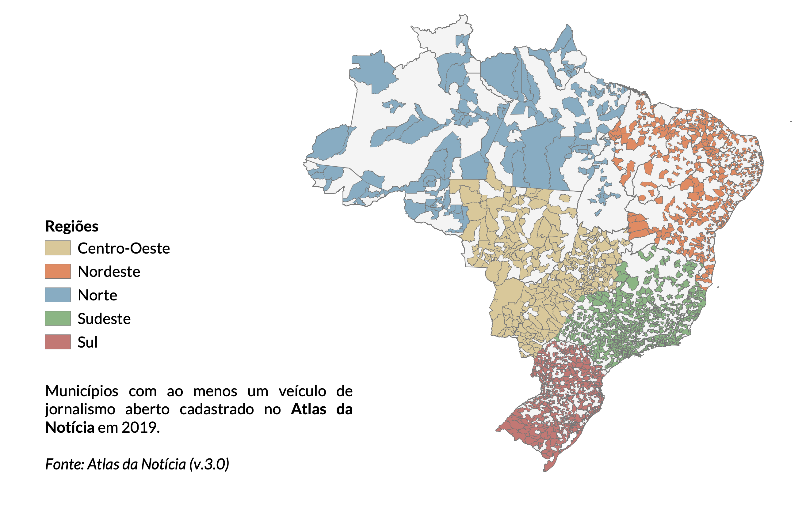

Os dados contrastam com a edição anterior (49% dos municípios possuíam ao menos um veículo), na qual não foi contabilizada a categorização entre o que é ou não um veículo jornalístico.
Quando levamos em conta somente veículos que publicam algum conteúdo jornalístico, encontramos mais desertos.
Veículos excluídos são, em sua grande maioria, mídias institucionais e estatais, tais como canais de TV de prefeituras, assembleias legislativas, publicações sindicais ou de associações.
Os dados abaixo consideram apenas veículos identificados como jornalísticos que se encontram em operação.
Clique no botão abaixo para fazer o download dos dados de municípios (não-desertos, quase desertos e desertos), unificados em uma tabela (333kb). Última atualização dessa tabela em 01/12/2019.
Colunas e exemplo de dados:
cidade
estado
regiao
codmun_ibge
populacao
ano
qtd_veiculos
veiculos_por_100k_hab
tipo
Abadia de Goiás
GO
Centro-Oeste
5200050
8583
2018
2
23.3
quase deserto
Quadro Geral
População total com ou sem acesso a veículos jornalísticos
tipo
população
proporção
com veículos
171.197.923
82,1%
sem veículos
37.296.977
17,9%

População total com ou sem acesso a veículos jornalísticos
região
veículos
proporção
Sudeste
4.521
38%
Sul
3.164
27%
Nordeste
1.722
15%
Centro-Oeste
1.612
14%
Norte
814
7%
Veículos por segmento e UF apenas veículos jornalísticos
estado
Impresso
Online
Rádio
Televisão
AC
9
35
15
17
AL
14
60
42
18
AM
15
72
51
23
AP
7
15
13
11
BA
71
110
246
31
CE
26
22
187
16
DF
78
140
41
23
ES
47
23
67
27
GO
140
63
278
40
MA
26
31
74
67
MG
375
138
507
166
MS
82
156
164
20
MT
78
140
94
75
PA
30
41
86
80
PB
9
40
86
16
PE
26
51
111
22
PI
8
39
82
15
PR
298
382
369
84
RJ
248
211
139
48
RN
17
19
59
13
RO
32
47
55
25
RR
4
8
12
10
RS
450
197
486
71
SC
404
163
224
36
SE
5
23
35
5
SP
906
795
641
183
TO
24
30
31
16
Desertos e quase desertos de notícias
tipo
população
proporção
Desertos(0 veículos)
37.296.977
17,9%
Quase desertos(1 ou 2 veículos)
27.495.351
13,2%
Não desertos(+3 veículos)
143.702.572
68,9%
Cidades e desertos por região considera apenas veículos jornalísticos abertos
região
qtd_cidades
qtd_desertos
proporção
Centro-Oeste
467
183
39,2%
Nordeste
1.794
1.318
73,5%
Norte
450
323
71,8%
Sudeste
1.668
1.010
60,6%
Sul
1.191
653
54,8%
Quantidade de desertos por UF
estado
qtd_municipios
qtd_desertos
proporção
AC
22
13
59,1%
AL
102
75
73,5%
AM
62
39
62,9%
AP
16
9
56,3%
BA
417
270
64,7%
CE
184
105
57,1%
ES
78
41
52,6%
GO
246
106
43,1%
MA
217
167
77,0%
MG
853
598
70,1%
MS
79
12
15,2%
MT
141
65
46,1%
PA
144
96
66,7%
PB
223
182
81,6%
PE
185
132
71,4%
PI
224
186
83,0%
PR
399
212
53,1%
RJ
92
24
26,1%
RN
167
143
85,6%
RO
52
31
59,6%
RR
15
11
73,3%
RS
497
283
56,9%
SC
295
158
53,6%
SE
75
58
77,3%
SP
645
347
53,8%
TO
139
124
89,2%
Fechamentos de veículos
Foram mapeados os fechamentos de 331 veículos jornalísticos brasileiros desde 2011. Os dados foram obtidos junto à Associação Nacional dos Jornais (ANJ) e também via levantamento próprio do Atlas da Notícia.